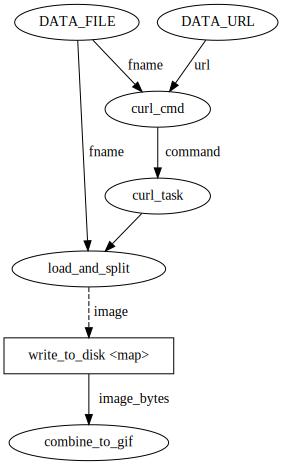

<!DOCTYPE html>

<html>
  <head>
    <meta charset="utf-8" />
    <meta name="viewport" content="width=device-width, initial-scale=1.0" />
    <title>ETL Pipelines with Prefect &#8212; Dask Examples  documentation</title>
    
  <link href="../_static/css/theme.css" rel="stylesheet">
  <link href="../_static/css/index.ff1ffe594081f20da1ef19478df9384b.css" rel="stylesheet">

    
  <link rel="stylesheet"
    href="../_static/vendor/fontawesome/5.13.0/css/all.min.css">
  <link rel="preload" as="font" type="font/woff2" crossorigin
    href="../_static/vendor/fontawesome/5.13.0/webfonts/fa-solid-900.woff2">
  <link rel="preload" as="font" type="font/woff2" crossorigin
    href="../_static/vendor/fontawesome/5.13.0/webfonts/fa-brands-400.woff2">

    
      

    
    <link rel="stylesheet" type="text/css" href="../_static/pygments.css" />
    <link rel="stylesheet" type="text/css" href="../_static/css/style.css" />
    
  <link rel="preload" as="script" href="../_static/js/index.be7d3bbb2ef33a8344ce.js">

    <script data-url_root="../" id="documentation_options" src="../_static/documentation_options.js"></script>
    <script src="../_static/jquery.js"></script>
    <script src="../_static/underscore.js"></script>
    <script src="../_static/doctools.js"></script>
    <script crossorigin="anonymous" integrity="sha256-Ae2Vz/4ePdIu6ZyI/5ZGsYnb+m0JlOmKPjt6XZ9JJkA=" src="https://cdnjs.cloudflare.com/ajax/libs/require.js/2.3.4/require.min.js"></script>
    <script src="../_static/sphinx-book-theme.9d8b4a8b9bb19db25eeaddc40d639ba2.js"></script>
    <script>window.MathJax = {"tex": {"inlineMath": [["$", "$"], ["\\(", "\\)"]], "processEscapes": true}, "options": {"ignoreHtmlClass": "tex2jax_ignore|mathjax_ignore|document", "processHtmlClass": "tex2jax_process|mathjax_process|math|output_area"}}</script>
    <script defer="defer" src="https://cdn.jsdelivr.net/npm/mathjax@3/es5/tex-mml-chtml.js"></script>
    <link rel="index" title="Index" href="../genindex.html" />
    <link rel="search" title="Search" href="../search.html" />
    <link rel="next" title="Stencil Computations with Numba" href="stencils-with-numba.html" />
    <link rel="prev" title="Image Processing" href="image-processing.html" />
    <meta name="viewport" content="width=device-width, initial-scale=1" />
    <meta name="docsearch:language" content="None">
    

    <!-- Google Analytics -->
    
  </head>
  <body data-spy="scroll" data-target="#bd-toc-nav" data-offset="80">

<nav class="dask-nav container-fluid">
  <ul>
    <li class="logo">
      <a href="https://docs.dask.org/">
        
      </a>
    </li>

    <li>
      <a href="https://docs.dask.org/">Dask</a>
    </li>

    <li>
      <a href="https://distributed.dask.org/">Distributed</a>
    </li>

    <li>
      <a href="https://ml.dask.org/">Dask ML</a>
    </li>

    <li>
      <a href="https://examples.dask.org/">Examples</a>
    </li>

    <li>
      <a href="https://docs.dask.org/en/latest/ecosystem.html">Ecosystem</a>
    </li>

    <li>
      <a href="https://docs.dask.org/en/latest/support.html">Community</a>
    </li>
  </ul>
</nav>


    
    <div class="container-fluid" id="banner"></div>

    

    <div class="container-xl">
      <div class="row">
          
<!-- Checkboxes to toggle the left sidebar -->
<input type="checkbox" class="sidebar-toggle" name="__navigation" id="__navigation" aria-label="Toggle navigation sidebar">
<label class="overlay" for="__navigation">
    <div class="visually-hidden">Toggle navigation sidebar</div>
</label>
<div class="col-12 col-md-3 bd-sidebar site-navigation " id="site-navigation">
    
        <div class="navbar-brand-box">
    <a class="navbar-brand text-wrap" href="../index.html">
      
      
      
      <h1 class="site-logo" id="site-title">Dask Examples  documentation</h1>
      
    </a>
</div><form class="bd-search d-flex align-items-center" action="../search.html" method="get">
  <i class="icon fas fa-search"></i>
  <input type="search" class="form-control" name="q" id="search-input" placeholder="Search the docs ..." aria-label="Search the docs ..." autocomplete="off" >
</form><nav class="bd-links" id="bd-docs-nav" aria-label="Main">
    <div class="bd-toc-item active">
        <p aria-level="2" class="caption" role="heading">
 <span class="caption-text">
  Basic Examples
 </span>
</p>
<ul class="nav bd-sidenav">
 <li class="toctree-l1">
  <a class="reference internal" href="../array.html">
   Dask Arrays
  </a>
 </li>
 <li class="toctree-l1">
  <a class="reference internal" href="../bag.html">
   Dask Bags
  </a>
 </li>
 <li class="toctree-l1">
  <a class="reference internal" href="../dataframe.html">
   Dask DataFrames
  </a>
 </li>
 <li class="toctree-l1">
  <a class="reference internal" href="../delayed.html">
   Custom Workloads with Dask Delayed
  </a>
 </li>
 <li class="toctree-l1">
  <a class="reference internal" href="../futures.html">
   Custom Workloads with Futures
  </a>
 </li>
 <li class="toctree-l1">
  <a class="reference internal" href="../machine-learning.html">
   Dask for Machine Learning
  </a>
 </li>
 <li class="toctree-l1">
  <a class="reference internal" href="../sql.html">
   Operating on Dask Dataframes with SQL
  </a>
 </li>
 <li class="toctree-l1">
  <a class="reference internal" href="../xarray.html">
   Xarray with Dask Arrays
  </a>
 </li>
 <li class="toctree-l1">
  <a class="reference internal" href="../resilience.html">
   Resilience against hardware failures
  </a>
 </li>
</ul>
<p aria-level="2" class="caption" role="heading">
 <span class="caption-text">
  Dataframes
 </span>
</p>
<ul class="nav bd-sidenav">
 <li class="toctree-l1">
  <a class="reference internal" href="../dataframes/01-data-access.html">
   DataFrames: Read and Write Data
  </a>
 </li>
 <li class="toctree-l1">
  <a class="reference internal" href="../dataframes/02-groupby.html">
   DataFrames: Groupby
  </a>
 </li>
 <li class="toctree-l1">
  <a class="reference internal" href="../dataframes/03-from-pandas-to-dask.html">
   Gotcha’s from Pandas to Dask
  </a>
 </li>
 <li class="toctree-l1">
  <a class="reference internal" href="../dataframes/04-reading-messy-data-into-dataframes.html">
   DataFrames: Reading in messy data
  </a>
 </li>
</ul>
<p aria-level="2" class="caption" role="heading">
 <span class="caption-text">
  Machine Learning
 </span>
</p>
<ul class="nav bd-sidenav">
 <li class="toctree-l1">
  <a class="reference internal" href="../machine-learning/blockwise-ensemble.html">
   Blockwise Ensemble Methods
  </a>
 </li>
 <li class="toctree-l1">
  <a class="reference internal" href="../machine-learning/scale-scikit-learn.html">
   Scale Scikit-Learn for Small Data Problems
  </a>
 </li>
 <li class="toctree-l1">
  <a class="reference internal" href="../machine-learning/parallel-prediction.html">
   Score and Predict Large Datasets
  </a>
 </li>
 <li class="toctree-l1">
  <a class="reference internal" href="../machine-learning/torch-prediction.html">
   Batch Prediction with PyTorch
  </a>
 </li>
 <li class="toctree-l1">
  <a class="reference internal" href="../machine-learning/training-on-large-datasets.html">
   Train Models on Large Datasets
  </a>
 </li>
 <li class="toctree-l1">
  <a class="reference internal" href="../machine-learning/incremental.html">
   Incrementally Train Large Datasets
  </a>
 </li>
 <li class="toctree-l1">
  <a class="reference internal" href="../machine-learning/text-vectorization.html">
   Text Vectorization Pipeline
  </a>
 </li>
 <li class="toctree-l1">
  <a class="reference internal" href="../machine-learning/hyperparam-opt.html">
   Hyperparameter optimization with Dask
  </a>
 </li>
 <li class="toctree-l1">
  <a class="reference internal" href="../machine-learning/xgboost.html">
   Scale XGBoost
  </a>
 </li>
 <li class="toctree-l1">
  <a class="reference internal" href="../machine-learning/voting-classifier.html">
   Use Voting Classifiers
  </a>
 </li>
 <li class="toctree-l1">
  <a class="reference internal" href="../machine-learning/tpot.html">
   Automate Machine Learning with TPOT
  </a>
 </li>
 <li class="toctree-l1">
  <a class="reference internal" href="../machine-learning/glm.html">
   Generalized Linear Models
  </a>
 </li>
 <li class="toctree-l1">
  <a class="reference internal" href="../machine-learning/svd.html">
   Singular Value Decomposition
  </a>
 </li>
</ul>
<p aria-level="2" class="caption" role="heading">
 <span class="caption-text">
  Applications
 </span>
</p>
<ul class="current nav bd-sidenav">
 <li class="toctree-l1">
  <a class="reference internal" href="json-data-on-the-web.html">
   Analyze web-hosted JSON data
  </a>
 </li>
 <li class="toctree-l1">
  <a class="reference internal" href="async-await.html">
   Async/Await and Non-Blocking Execution
  </a>
 </li>
 <li class="toctree-l1">
  <a class="reference internal" href="async-web-server.html">
   Asynchronous Computation: Web Servers + Dask
  </a>
 </li>
 <li class="toctree-l1">
  <a class="reference internal" href="embarrassingly-parallel.html">
   Embarrassingly parallel Workloads
  </a>
 </li>
 <li class="toctree-l1">
  <a class="reference internal" href="evolving-workflows.html">
   Handle Evolving Workflows
  </a>
 </li>
 <li class="toctree-l1">
  <a class="reference internal" href="image-processing.html">
   Image Processing
  </a>
 </li>
 <li class="toctree-l1 current active">
  <a class="current reference internal" href="#">
   ETL Pipelines with Prefect
  </a>
 </li>
 <li class="toctree-l1">
  <a class="reference internal" href="stencils-with-numba.html">
   Stencil Computations with Numba
  </a>
 </li>
 <li class="toctree-l1">
  <a class="reference internal" href="forecasting-with-prophet.html">
   Time Series Forecasting
  </a>
 </li>
</ul>
<p aria-level="2" class="caption" role="heading">
 <span class="caption-text">
  User Surveys
 </span>
</p>
<ul class="nav bd-sidenav">
 <li class="toctree-l1">
  <a class="reference internal" href="../surveys/2021.html">
   2021 Dask User Survey Results
  </a>
 </li>
 <li class="toctree-l1">
  <a class="reference internal" href="../surveys/2020.html">
   2020 Dask User Survey Results
  </a>
 </li>
 <li class="toctree-l1">
  <a class="reference internal" href="../surveys/2019.html">
   2019 Dask User Survey Results
  </a>
 </li>
</ul>

    </div>
</nav> <!-- To handle the deprecated key -->

<div class="navbar_extra_footer">
  Theme by the <a href="https://ebp.jupyterbook.org">Executable Book Project</a>
</div>

</div>


          


          
<!-- This is an invisible pixel that we watch to see if we've scrolled. -->
<div class="sbt-scroll-pixel-helper"></div>
<main class="col py-md-3 pl-md-4 bd-content overflow-auto" role="main">
    
    <div class="topbar container-xl fixed-top">
    <div class="topbar-contents row">
        <div class="col-12 col-md-3 bd-topbar-whitespace site-navigation show"></div>
        <div class="col pl-md-4 topbar-main">
            <div class="topbar-left">
                
                <label class="nav-toggle-button" for="__navigation">
                    <div class="visually-hidden">Toggle navigation</div>
                    <i class="fas fa-bars"></i>
                </label>
                
            </div>
            
<div class="dropdown-buttons-trigger">
    <button id="dropdown-buttons-trigger" class="btn btn-secondary topbarbtn" aria-label="Download this page"><i
            class="fas fa-download"></i></button>

    <div class="dropdown-buttons">
        <!-- ipynb file if we had a myst markdown file -->
        
        <!-- Download raw file -->
        <a class="dropdown-buttons" href="../_sources/applications/prefect-etl.ipynb.txt"><button type="button"
                class="btn btn-secondary topbarbtn" title="Download source file" data-toggle="tooltip"
                data-placement="left">.ipynb</button></a>
        <!-- Download PDF via print -->
        <button type="button" id="download-print" class="btn btn-secondary topbarbtn" title="Print to PDF"
                onclick="printPdf(this)" data-toggle="tooltip" data-placement="left">.pdf</button>
    </div>
</div>

            <!-- Source interaction buttons -->

            <!-- Full screen (wrap in <a> to have style consistency -->

<a class="full-screen-button"><button type="button" class="btn btn-secondary topbarbtn" data-toggle="tooltip"
        data-placement="bottom" onclick="toggleFullScreen()" aria-label="Fullscreen mode"
        title="Fullscreen mode"><i
            class="fas fa-expand"></i></button></a>

            <!-- Launch buttons -->

        </div>

        <!-- Table of contents -->
        <div class="d-none d-md-block col-md-2 bd-toc show noprint">
            
            <div class="tocsection onthispage pt-5 pb-3">
                <i class="fas fa-list"></i> Contents
            </div>
            <nav id="bd-toc-nav" aria-label="Page">
                <ul class="visible nav section-nav flex-column">
 <li class="toc-h2 nav-item toc-entry">
  <a class="reference internal nav-link" href="#Goal">
   Goal
  </a>
  <ul class="nav section-nav flex-column">
   <li class="toc-h3 nav-item toc-entry">
    <a class="reference internal nav-link" href="#Extract">
     Extract
    </a>
   </li>
   <li class="toc-h3 nav-item toc-entry">
    <a class="reference internal nav-link" href="#Transform">
     Transform
    </a>
   </li>
   <li class="toc-h3 nav-item toc-entry">
    <a class="reference internal nav-link" href="#Load">
     Load
    </a>
   </li>
  </ul>
 </li>
 <li class="toc-h2 nav-item toc-entry">
  <a class="reference internal nav-link" href="#Build-the-Flow">
   Build the Flow
  </a>
  <ul class="nav section-nav flex-column">
   <li class="toc-h3 nav-item toc-entry">
    <a class="reference internal nav-link" href="#Running-the-Flow-on-Dask">
     Running the Flow on Dask
    </a>
   </li>
  </ul>
 </li>
 <li class="toc-h2 nav-item toc-entry">
  <a class="reference internal nav-link" href="#Next-Steps">
   Next Steps
  </a>
 </li>
 <li class="toc-h2 nav-item toc-entry">
  <a class="reference internal nav-link" href="#Play">
   Play
  </a>
 </li>
</ul>

            </nav>
        </div>
    </div>
</div>
    <div id="main-content" class="row">
        <div class="col-12 col-md-9 pl-md-3 pr-md-0">
            <!-- Table of contents that is only displayed when printing the page -->
            <div id="jb-print-docs-body" class="onlyprint">
                <h1>ETL Pipelines with Prefect</h1>
                <!-- Table of contents -->
                <div id="print-main-content">
                    <div id="jb-print-toc">
                        
                        <div>
                            <h2> Contents </h2>
                        </div>
                        <nav aria-label="Page">
                            <ul class="visible nav section-nav flex-column">
 <li class="toc-h2 nav-item toc-entry">
  <a class="reference internal nav-link" href="#Goal">
   Goal
  </a>
  <ul class="nav section-nav flex-column">
   <li class="toc-h3 nav-item toc-entry">
    <a class="reference internal nav-link" href="#Extract">
     Extract
    </a>
   </li>
   <li class="toc-h3 nav-item toc-entry">
    <a class="reference internal nav-link" href="#Transform">
     Transform
    </a>
   </li>
   <li class="toc-h3 nav-item toc-entry">
    <a class="reference internal nav-link" href="#Load">
     Load
    </a>
   </li>
  </ul>
 </li>
 <li class="toc-h2 nav-item toc-entry">
  <a class="reference internal nav-link" href="#Build-the-Flow">
   Build the Flow
  </a>
  <ul class="nav section-nav flex-column">
   <li class="toc-h3 nav-item toc-entry">
    <a class="reference internal nav-link" href="#Running-the-Flow-on-Dask">
     Running the Flow on Dask
    </a>
   </li>
  </ul>
 </li>
 <li class="toc-h2 nav-item toc-entry">
  <a class="reference internal nav-link" href="#Next-Steps">
   Next Steps
  </a>
 </li>
 <li class="toc-h2 nav-item toc-entry">
  <a class="reference internal nav-link" href="#Play">
   Play
  </a>
 </li>
</ul>

                        </nav>
                    </div>
                </div>
            </div>
            
              <div>
                
  
<style>
/* CSS for nbsphinx extension */

/* remove conflicting styling from Sphinx themes */
div.nbinput.container div.prompt *,
div.nboutput.container div.prompt *,
div.nbinput.container div.input_area pre,
div.nboutput.container div.output_area pre,
div.nbinput.container div.input_area .highlight,
div.nboutput.container div.output_area .highlight {
    border: none;
    padding: 0;
    margin: 0;
    box-shadow: none;
}

div.nbinput.container > div[class*=highlight],
div.nboutput.container > div[class*=highlight] {
    margin: 0;
}

div.nbinput.container div.prompt *,
div.nboutput.container div.prompt * {
    background: none;
}

div.nboutput.container div.output_area .highlight,
div.nboutput.container div.output_area pre {
    background: unset;
}

div.nboutput.container div.output_area div.highlight {
    color: unset;  /* override Pygments text color */
}

/* avoid gaps between output lines */
div.nboutput.container div[class*=highlight] pre {
    line-height: normal;
}

/* input/output containers */
div.nbinput.container,
div.nboutput.container {
    display: -webkit-flex;
    display: flex;
    align-items: flex-start;
    margin: 0;
    width: 100%;
}
@media (max-width: 540px) {
    div.nbinput.container,
    div.nboutput.container {
        flex-direction: column;
    }
}

/* input container */
div.nbinput.container {
    padding-top: 5px;
}

/* last container */
div.nblast.container {
    padding-bottom: 5px;
}

/* input prompt */
div.nbinput.container div.prompt pre {
    color: #307FC1;
}

/* output prompt */
div.nboutput.container div.prompt pre {
    color: #BF5B3D;
}

/* all prompts */
div.nbinput.container div.prompt,
div.nboutput.container div.prompt {
    width: 4.5ex;
    padding-top: 5px;
    position: relative;
    user-select: none;
}

div.nbinput.container div.prompt > div,
div.nboutput.container div.prompt > div {
    position: absolute;
    right: 0;
    margin-right: 0.3ex;
}

@media (max-width: 540px) {
    div.nbinput.container div.prompt,
    div.nboutput.container div.prompt {
        width: unset;
        text-align: left;
        padding: 0.4em;
    }
    div.nboutput.container div.prompt.empty {
        padding: 0;
    }

    div.nbinput.container div.prompt > div,
    div.nboutput.container div.prompt > div {
        position: unset;
    }
}

/* disable scrollbars on prompts */
div.nbinput.container div.prompt pre,
div.nboutput.container div.prompt pre {
    overflow: hidden;
}

/* input/output area */
div.nbinput.container div.input_area,
div.nboutput.container div.output_area {
    -webkit-flex: 1;
    flex: 1;
    overflow: auto;
}
@media (max-width: 540px) {
    div.nbinput.container div.input_area,
    div.nboutput.container div.output_area {
        width: 100%;
    }
}

/* input area */
div.nbinput.container div.input_area {
    border: 1px solid #e0e0e0;
    border-radius: 2px;
    /*background: #f5f5f5;*/
}

/* override MathJax center alignment in output cells */
div.nboutput.container div[class*=MathJax] {
    text-align: left !important;
}

/* override sphinx.ext.imgmath center alignment in output cells */
div.nboutput.container div.math p {
    text-align: left;
}

/* standard error */
div.nboutput.container div.output_area.stderr {
    background: #fdd;
}

/* ANSI colors */
.ansi-black-fg { color: #3E424D; }
.ansi-black-bg { background-color: #3E424D; }
.ansi-black-intense-fg { color: #282C36; }
.ansi-black-intense-bg { background-color: #282C36; }
.ansi-red-fg { color: #E75C58; }
.ansi-red-bg { background-color: #E75C58; }
.ansi-red-intense-fg { color: #B22B31; }
.ansi-red-intense-bg { background-color: #B22B31; }
.ansi-green-fg { color: #00A250; }
.ansi-green-bg { background-color: #00A250; }
.ansi-green-intense-fg { color: #007427; }
.ansi-green-intense-bg { background-color: #007427; }
.ansi-yellow-fg { color: #DDB62B; }
.ansi-yellow-bg { background-color: #DDB62B; }
.ansi-yellow-intense-fg { color: #B27D12; }
.ansi-yellow-intense-bg { background-color: #B27D12; }
.ansi-blue-fg { color: #208FFB; }
.ansi-blue-bg { background-color: #208FFB; }
.ansi-blue-intense-fg { color: #0065CA; }
.ansi-blue-intense-bg { background-color: #0065CA; }
.ansi-magenta-fg { color: #D160C4; }
.ansi-magenta-bg { background-color: #D160C4; }
.ansi-magenta-intense-fg { color: #A03196; }
.ansi-magenta-intense-bg { background-color: #A03196; }
.ansi-cyan-fg { color: #60C6C8; }
.ansi-cyan-bg { background-color: #60C6C8; }
.ansi-cyan-intense-fg { color: #258F8F; }
.ansi-cyan-intense-bg { background-color: #258F8F; }
.ansi-white-fg { color: #C5C1B4; }
.ansi-white-bg { background-color: #C5C1B4; }
.ansi-white-intense-fg { color: #A1A6B2; }
.ansi-white-intense-bg { background-color: #A1A6B2; }

.ansi-default-inverse-fg { color: #FFFFFF; }
.ansi-default-inverse-bg { background-color: #000000; }

.ansi-bold { font-weight: bold; }
.ansi-underline { text-decoration: underline; }


div.nbinput.container div.input_area div[class*=highlight] > pre,
div.nboutput.container div.output_area div[class*=highlight] > pre,
div.nboutput.container div.output_area div[class*=highlight].math,
div.nboutput.container div.output_area.rendered_html,
div.nboutput.container div.output_area > div.output_javascript,
div.nboutput.container div.output_area:not(.rendered_html) > img{
    padding: 5px;
    margin: 0;
}

/* fix copybtn overflow problem in chromium (needed for 'sphinx_copybutton') */
div.nbinput.container div.input_area > div[class^='highlight'],
div.nboutput.container div.output_area > div[class^='highlight']{
    overflow-y: hidden;
}

/* hide copybtn icon on prompts (needed for 'sphinx_copybutton') */
.prompt .copybtn {
    display: none;
}

/* Some additional styling taken form the Jupyter notebook CSS */
div.rendered_html table {
  border: none;
  border-collapse: collapse;
  border-spacing: 0;
  color: black;
  font-size: 12px;
  table-layout: fixed;
}
div.rendered_html thead {
  border-bottom: 1px solid black;
  vertical-align: bottom;
}
div.rendered_html tr,
div.rendered_html th,
div.rendered_html td {
  text-align: right;
  vertical-align: middle;
  padding: 0.5em 0.5em;
  line-height: normal;
  white-space: normal;
  max-width: none;
  border: none;
}
div.rendered_html th {
  font-weight: bold;
}
div.rendered_html tbody tr:nth-child(odd) {
  background: #f5f5f5;
}
div.rendered_html tbody tr:hover {
  background: rgba(66, 165, 245, 0.2);
}

/* CSS overrides for sphinx_rtd_theme */

/* 24px margin */
.nbinput.nblast.container,
.nboutput.nblast.container {
    margin-bottom: 19px;  /* padding has already 5px */
}

/* ... except between code cells! */
.nblast.container + .nbinput.container {
    margin-top: -19px;
}

.admonition > p:before {
    margin-right: 4px;  /* make room for the exclamation icon */
}

/* Fix math alignment, see https://github.com/rtfd/sphinx_rtd_theme/pull/686 */
.math {
    text-align: unset;
}
</style>
<div class="admonition-live-notebook admonition">
<p class="admonition-title">Live Notebook</p>
<p>You can run this notebook in a <a class="reference external" href="https://mybinder.org/v2/gh/dask/dask-examples/main?urlpath=lab/tree/applications/prefect-etl.ipynb">live session</a> <a class="reference external" href="https://mybinder.org/v2/gh/dask/dask-examples/main?urlpath=lab/tree/applications/prefect-etl.ipynb"></a> or view it <a class="reference external" href="https://github.com/dask/dask-examples/blob/main/applications/prefect-etl.ipynb">on Github</a>.</p>
</div>
<div class="section" id="ETL-Pipelines-with-Prefect">
<h1>ETL Pipelines with Prefect<a class="headerlink" href="#ETL-Pipelines-with-Prefect" title="Permalink to this headline">¶</a></h1>
<p><a class="reference external" href="https://github.com/PrefectHQ/prefect">Prefect</a> is a platform for automating data workflows. Data engineers and data scientists can build, test and deploy production pipelines without worrying about all of the <a class="reference external" href="https://medium.com/the-prefect-blog/positive-and-negative-data-engineering-a02cb497583d">“negative engineering” aspects</a> of production. For example, Prefect makes it easy to deploy a workflow that runs on a complicated schedule, requires task retries in the event of failures, and
sends notifications when certain tasks are complete. Prefect was built on top of Dask, and <a class="reference external" href="http://stories.dask.org/en/latest/prefect-workflows.html#how-dask-helps">relies on Dask</a> to schedule and manage the execution of a Prefect workflow in a distributed environment.</p>
<p>This example demonstrates running a Prefect ETL Flow on Dask which ultimately creates a GIF. While this is a somewhat unconventional use case of Prefect, we’re no strangers to <a class="reference external" href="https://medium.com/the-prefect-blog/prefect-runs-on-prefect-3e6df553c3a4">unconventional use cases</a>.</p>
<p>In the world of workflow engines, Prefect supports many unique features; in this particular example we will see:</p>
<ul class="simple">
<li><p>parametrization of workflows</p></li>
<li><p>dynamic runtime “mapping” of workflow tasks</p></li>
<li><p>customizable execution logic</p></li>
</ul>
<p>You wouldn’t get this from any other engine.</p>
<p><strong>Contents</strong></p>
<ol class="arabic simple" start="0">
<li><p><a class="reference external" href="#Goal">Description of goal</a></p></li>
<li><p>Building our Flow</p>
<ol class="arabic simple">
<li><p><a class="reference external" href="#Extract">Extract</a></p></li>
<li><p><a class="reference external" href="#Transform">Transform</a></p></li>
<li><p><a class="reference external" href="#Load">Load</a></p></li>
<li><p><a class="reference external" href="#Build-the-Flow">Putting the pieces together</a></p></li>
</ol>
</li>
<li><p><a class="reference external" href="#Running-our-Flow-on-Dask">Running our Flow on Dask</a></p></li>
<li><p><a class="reference external" href="#Play">Watching our GIF</a></p></li>
</ol>
<div class="section" id="Goal">
<h2><a class="reference external" href="#Goal">Goal</a><a class="headerlink" href="#Goal" title="Permalink to this headline">¶</a></h2>
<p>To demonstrate how Prefect and Dask work together, we are going to build and execute a standard “Extract / Transform / Load” (ETL) workflow for processing some basic image data. Most ETL workflows involve a scheduled migration of data from one database to another. In our case, we will be moving data from a file located at a known URL to our local hard disk, converting the individual file into a series of frames, and compiling those frames into a GIF. The URL references a file containing raw
bytes such as:</p>
<pre class="literal-block">b&quot;&quot;&quot;aÙw˜≠•∆≠≠fi#!≠≠÷≠•Ω≠úΩ••µú•µîúµ•úΩ••Ω3&amp;µ•Ω! µ≠∆≠•¥4(%µú∑≠≠Œ≠î≠≠≠∆≠îµúî≠úîµE5.≠ú≠≠•Œµµfi••∆•≠ŒµµŒúúΩ62&amp;)1&amp;623µ•∆Ωµ÷úî•ßjxΩΩÁú•Ωµ≠Œ••≠ú•≠Ω≠∆≠µÁâUV≠µ‹ΩµŒîî•NC5µ≠Ÿôãô•î•µ•µîú≠#VHCuhl≠≠ΩôchâRIoc]™≠Á≠î•™ú»öis•ú•f7,íYfL9?îî≠≠•÷∑ò™gWVxGEΩ≠–))1qB5µ≠Ω81R,´tÜñWV!HCDBB5;5?&quot;&quot;&quot;</pre>
<p>The steps of our workflow will be as follows:</p>
<ol class="arabic simple">
<li><p>Extract: pull the data file from a URL (specified by a <code class="docutils literal notranslate"><span class="pre">Parameter</span></code>) to disk</p></li>
<li><p>Transform: split the file into multiple files, each corresponding to a single frame</p></li>
<li><p>Load: Store each frame individually, and compile the frames together into a GIF</p></li>
</ol>
<p>Once we have built our Flow, we can execute it with different values for the <code class="docutils literal notranslate"><span class="pre">Parameter</span></code> or even run it on a nightly schedule.</p>
<p><strong>NOTE:</strong> If we planned on executing this Flow in a truly distributed environment, writing the images to the local filesystem would <em>not</em> be appropriate. We would instead use an external datastore such as Google Cloud Storage, or a proper database.</p>
<div class="section" id="Extract">
<h3><a class="reference external" href="#Extract">Extract</a><a class="headerlink" href="#Extract" title="Permalink to this headline">¶</a></h3>
<p>First, we will define our tasks for <em>extracting</em> the image data file from a given URL and saving it to a given file location. To do so, we will utilize two methods for creating Prefect Tasks: - the <code class="docutils literal notranslate"><span class="pre">task</span></code> decorator for converting any Python function into a task - a pre-written, configurable Task from the <a class="reference external" href="https://docs.prefect.io/guide/task_library/">Prefect “Task Library”</a> which helps us abstract some standard boilerplate</p>
<p>Additionally, we will utilize the following Prefect concepts: - a <a class="reference external" href="https://docs.prefect.io/guide/core_concepts/execution.html#state-signals">Prefect signal</a> for marking this task and its downstream depedencies as successfully “Skipped” if the file is already present in our local filesystem - retry semantics: if, for whatever reason, our <code class="docutils literal notranslate"><span class="pre">curl</span></code> command fails to connect, we want it to retry up to 2 times with a 10 second delay. This way, if we run this workflow on a schedule we won’t need to
concern ourselves with temporary intermittent connection issues.</p>
<p>Right now we are simply defining our individual tasks - we won’t actually set up our dependency structure until we create the full Flow.</p>
<div class="nbinput nblast docutils container">
<div class="prompt highlight-none notranslate"><div class="highlight"><pre><span></span>[1]:
</pre></div>
</div>
<div class="input_area highlight-ipython3 notranslate"><div class="highlight"><pre><span></span><span class="kn">import</span> <span class="nn">datetime</span>
<span class="kn">import</span> <span class="nn">os</span>

<span class="kn">import</span> <span class="nn">prefect</span>
<span class="kn">from</span> <span class="nn">prefect</span> <span class="kn">import</span> <span class="n">task</span>
<span class="kn">from</span> <span class="nn">prefect.engine.signals</span> <span class="kn">import</span> <span class="n">SKIP</span>
<span class="kn">from</span> <span class="nn">prefect.tasks.shell</span> <span class="kn">import</span> <span class="n">ShellTask</span>


<span class="nd">@task</span>
<span class="k">def</span> <span class="nf">curl_cmd</span><span class="p">(</span><span class="n">url</span><span class="p">:</span> <span class="nb">str</span><span class="p">,</span> <span class="n">fname</span><span class="p">:</span> <span class="nb">str</span><span class="p">)</span> <span class="o">-&gt;</span> <span class="nb">str</span><span class="p">:</span>
    <span class="sd">&quot;&quot;&quot;</span>
<span class="sd">    The curl command we wish to execute.</span>
<span class="sd">    &quot;&quot;&quot;</span>
    <span class="k">if</span> <span class="n">os</span><span class="o">.</span><span class="n">path</span><span class="o">.</span><span class="n">exists</span><span class="p">(</span><span class="n">fname</span><span class="p">):</span>
        <span class="k">raise</span> <span class="n">SKIP</span><span class="p">(</span><span class="s2">&quot;Image data file already exists.&quot;</span><span class="p">)</span>
    <span class="k">return</span> <span class="s2">&quot;curl -fL -o </span><span class="si">{fname}</span><span class="s2"> </span><span class="si">{url}</span><span class="s2">&quot;</span><span class="o">.</span><span class="n">format</span><span class="p">(</span><span class="n">fname</span><span class="o">=</span><span class="n">fname</span><span class="p">,</span> <span class="n">url</span><span class="o">=</span><span class="n">url</span><span class="p">)</span>


<span class="c1"># ShellTask is a task from the Task library which will execute a given command in a subprocess</span>
<span class="c1"># and fail if the command returns a non-zero exit code</span>

<span class="n">download</span> <span class="o">=</span> <span class="n">ShellTask</span><span class="p">(</span><span class="n">name</span><span class="o">=</span><span class="s2">&quot;curl_task&quot;</span><span class="p">,</span> <span class="n">max_retries</span><span class="o">=</span><span class="mi">2</span><span class="p">,</span> <span class="n">retry_delay</span><span class="o">=</span><span class="n">datetime</span><span class="o">.</span><span class="n">timedelta</span><span class="p">(</span><span class="n">seconds</span><span class="o">=</span><span class="mi">10</span><span class="p">))</span>
</pre></div>
</div>
</div>
</div>
<div class="section" id="Transform">
<h3><a class="reference external" href="#Transform">Transform</a><a class="headerlink" href="#Transform" title="Permalink to this headline">¶</a></h3>
<p>Next up, we need to define our task which loads the image data file and splits it into multiple frames. In this case, each frame is delimited by 4 newlines. Note that, in the event the previous two tasks are “Skipped”, the default behavior in Prefect is to skip downstream dependencies as well. However, as with most things in Prefect, this behavior is customizable. In this case, we want this task to run regardless of whether the upstreams skipped or not, so we set the <code class="docutils literal notranslate"><span class="pre">skip_on_upstream_skip</span></code>
flag to <code class="docutils literal notranslate"><span class="pre">False</span></code>.</p>
<div class="nbinput nblast docutils container">
<div class="prompt highlight-none notranslate"><div class="highlight"><pre><span></span>[2]:
</pre></div>
</div>
<div class="input_area highlight-ipython3 notranslate"><div class="highlight"><pre><span></span><span class="nd">@task</span><span class="p">(</span><span class="n">skip_on_upstream_skip</span><span class="o">=</span><span class="kc">False</span><span class="p">)</span>
<span class="k">def</span> <span class="nf">load_and_split</span><span class="p">(</span><span class="n">fname</span><span class="p">:</span> <span class="nb">str</span><span class="p">)</span> <span class="o">-&gt;</span> <span class="nb">list</span><span class="p">:</span>
    <span class="sd">&quot;&quot;&quot;</span>
<span class="sd">    Loads image data file at `fname` and splits it into</span>
<span class="sd">    multiple frames.  Returns a list of bytes, one element</span>
<span class="sd">    for each frame.</span>
<span class="sd">    &quot;&quot;&quot;</span>
    <span class="k">with</span> <span class="nb">open</span><span class="p">(</span><span class="n">fname</span><span class="p">,</span> <span class="s2">&quot;rb&quot;</span><span class="p">)</span> <span class="k">as</span> <span class="n">f</span><span class="p">:</span>
        <span class="n">images</span> <span class="o">=</span> <span class="n">f</span><span class="o">.</span><span class="n">read</span><span class="p">()</span>

    <span class="k">return</span> <span class="p">[</span><span class="n">img</span> <span class="k">for</span> <span class="n">img</span> <span class="ow">in</span> <span class="n">images</span><span class="o">.</span><span class="n">split</span><span class="p">(</span><span class="sa">b</span><span class="s2">&quot;</span><span class="se">\n</span><span class="s2">&quot;</span> <span class="o">*</span> <span class="mi">4</span><span class="p">)</span> <span class="k">if</span> <span class="n">img</span><span class="p">]</span>
</pre></div>
</div>
</div>
</div>
<div class="section" id="Load">
<h3><a class="reference external" href="#Load">Load</a><a class="headerlink" href="#Load" title="Permalink to this headline">¶</a></h3>
<p>Finally, we want to write our frames to disk as well as combine the frames into a single GIF. In order to achieve this goal, we are going to utilize <a class="reference external" href="https://docs.prefect.io/guide/core_concepts/mapping.html">Prefect’s task “mapping” feature</a> which conveniently spawns new tasks in response to upstream outputs. In this case, we will write a single task for writing an image to disk, and “map” this task over all the image frames returned by <code class="docutils literal notranslate"><span class="pre">load_and_split</span></code> above! To infer which frame we are
on, we look in <code class="docutils literal notranslate"><span class="pre">`prefect.context</span></code> &lt;<a class="reference external" href="https://docs.prefect.io/guide/core_concepts/execution.html#context">https://docs.prefect.io/guide/core_concepts/execution.html#context</a>&gt;`__.</p>
<p>Additionally, we can “reduce” over a mapped task - in this case, we will take the collection of mapped tasks and pass them into our <code class="docutils literal notranslate"><span class="pre">combine_to_gif</span></code> task for creating and saving our GIF.</p>
<div class="nbinput nblast docutils container">
<div class="prompt highlight-none notranslate"><div class="highlight"><pre><span></span>[3]:
</pre></div>
</div>
<div class="input_area highlight-ipython3 notranslate"><div class="highlight"><pre><span></span><span class="nd">@task</span>
<span class="k">def</span> <span class="nf">write_to_disk</span><span class="p">(</span><span class="n">image</span><span class="p">:</span> <span class="nb">bytes</span><span class="p">)</span> <span class="o">-&gt;</span> <span class="nb">bytes</span><span class="p">:</span>
    <span class="sd">&quot;&quot;&quot;</span>
<span class="sd">    Given a single image represented as bytes, writes the image</span>
<span class="sd">    to the present working directory with a filename determined</span>
<span class="sd">    by `map_index`.  Returns the image bytes.</span>
<span class="sd">    &quot;&quot;&quot;</span>
    <span class="n">frame_no</span> <span class="o">=</span> <span class="n">prefect</span><span class="o">.</span><span class="n">context</span><span class="o">.</span><span class="n">get</span><span class="p">(</span><span class="s2">&quot;map_index&quot;</span><span class="p">)</span>
    <span class="k">with</span> <span class="nb">open</span><span class="p">(</span><span class="s2">&quot;frame_</span><span class="si">{0:0=2d}</span><span class="s2">.gif&quot;</span><span class="o">.</span><span class="n">format</span><span class="p">(</span><span class="n">frame_no</span><span class="p">),</span> <span class="s2">&quot;wb&quot;</span><span class="p">)</span> <span class="k">as</span> <span class="n">f</span><span class="p">:</span>
        <span class="n">f</span><span class="o">.</span><span class="n">write</span><span class="p">(</span><span class="n">image</span><span class="p">)</span>
    <span class="k">return</span> <span class="n">image</span>
</pre></div>
</div>
</div>
<div class="nbinput nblast docutils container">
<div class="prompt highlight-none notranslate"><div class="highlight"><pre><span></span>[4]:
</pre></div>
</div>
<div class="input_area highlight-ipython3 notranslate"><div class="highlight"><pre><span></span><span class="kn">import</span> <span class="nn">imageio</span>
<span class="kn">from</span> <span class="nn">io</span> <span class="kn">import</span> <span class="n">BytesIO</span>


<span class="nd">@task</span>
<span class="k">def</span> <span class="nf">combine_to_gif</span><span class="p">(</span><span class="n">image_bytes</span><span class="p">:</span> <span class="nb">list</span><span class="p">)</span> <span class="o">-&gt;</span> <span class="kc">None</span><span class="p">:</span>
    <span class="sd">&quot;&quot;&quot;</span>
<span class="sd">    Given a list of ordered images represented as bytes,</span>
<span class="sd">    combines them into a single GIF stored in the present working directory.</span>
<span class="sd">    &quot;&quot;&quot;</span>
    <span class="n">images</span> <span class="o">=</span> <span class="p">[</span><span class="n">imageio</span><span class="o">.</span><span class="n">imread</span><span class="p">(</span><span class="n">BytesIO</span><span class="p">(</span><span class="n">image</span><span class="p">))</span> <span class="k">for</span> <span class="n">image</span> <span class="ow">in</span> <span class="n">image_bytes</span><span class="p">]</span>
    <span class="n">imageio</span><span class="o">.</span><span class="n">mimsave</span><span class="p">(</span><span class="s1">&#39;./clip.gif&#39;</span><span class="p">,</span> <span class="n">images</span><span class="p">)</span>
</pre></div>
</div>
</div>
</div>
</div>
<div class="section" id="Build-the-Flow">
<h2><a class="reference external" href="#Build-the-Flow">Build the Flow</a><a class="headerlink" href="#Build-the-Flow" title="Permalink to this headline">¶</a></h2>
<p>Finally, we need to put our tasks together into a Prefect “Flow”. Similar to Dask’s <code class="docutils literal notranslate"><span class="pre">delayed</span></code> interface, all computation is deferred and no Task code will be executed in this step. Because Prefect maintains a stricter contract between tasks and additionally needs the ability to run in non-Dask execution environments, the mechanism for deferring execution is independent of Dask.</p>
<p>In addition to the tasks we have already defined, we introduce two “Parameters” for specifying the URL and local file location of our data. At runtime, we can optionally override these tasks to return different values.</p>
<div class="nbinput docutils container">
<div class="prompt highlight-none notranslate"><div class="highlight"><pre><span></span>[5]:
</pre></div>
</div>
<div class="input_area highlight-ipython3 notranslate"><div class="highlight"><pre><span></span><span class="kn">from</span> <span class="nn">prefect</span> <span class="kn">import</span> <span class="n">Parameter</span><span class="p">,</span> <span class="n">Flow</span>


<span class="n">DATA_URL</span> <span class="o">=</span> <span class="n">Parameter</span><span class="p">(</span><span class="s2">&quot;DATA_URL&quot;</span><span class="p">,</span>
                     <span class="n">default</span><span class="o">=</span><span class="s2">&quot;https://github.com/cicdw/image-data/blob/master/all-images.img?raw=true&quot;</span><span class="p">)</span>

<span class="n">DATA_FILE</span> <span class="o">=</span> <span class="n">Parameter</span><span class="p">(</span><span class="s2">&quot;DATA_FILE&quot;</span><span class="p">,</span> <span class="n">default</span><span class="o">=</span><span class="s2">&quot;image-data.img&quot;</span><span class="p">)</span>


<span class="k">with</span> <span class="n">Flow</span><span class="p">(</span><span class="s2">&quot;Image ETL&quot;</span><span class="p">)</span> <span class="k">as</span> <span class="n">flow</span><span class="p">:</span>

    <span class="c1"># Extract</span>
    <span class="n">command</span> <span class="o">=</span> <span class="n">curl_cmd</span><span class="p">(</span><span class="n">DATA_URL</span><span class="p">,</span> <span class="n">DATA_FILE</span><span class="p">)</span>
    <span class="n">curl</span> <span class="o">=</span> <span class="n">download</span><span class="p">(</span><span class="n">command</span><span class="o">=</span><span class="n">command</span><span class="p">)</span>

    <span class="c1"># Transform</span>
    <span class="c1"># we use the `upstream_tasks` keyword to specify non-data dependencies</span>
    <span class="n">images</span> <span class="o">=</span> <span class="n">load_and_split</span><span class="p">(</span><span class="n">fname</span><span class="o">=</span><span class="n">DATA_FILE</span><span class="p">,</span> <span class="n">upstream_tasks</span><span class="o">=</span><span class="p">[</span><span class="n">curl</span><span class="p">])</span>

    <span class="c1"># Load</span>
    <span class="n">frames</span> <span class="o">=</span> <span class="n">write_to_disk</span><span class="o">.</span><span class="n">map</span><span class="p">(</span><span class="n">images</span><span class="p">)</span>
    <span class="n">result</span> <span class="o">=</span> <span class="n">combine_to_gif</span><span class="p">(</span><span class="n">frames</span><span class="p">)</span>


<span class="n">flow</span><span class="o">.</span><span class="n">visualize</span><span class="p">()</span>
</pre></div>
</div>
</div>
<div class="nboutput nblast docutils container">
<div class="prompt highlight-none notranslate"><div class="highlight"><pre><span></span>[5]:
</pre></div>
</div>
<div class="output_area docutils container">
</div>
</div>
<div class="section" id="Running-the-Flow-on-Dask">
<h3><a class="reference external" href="#Running-the-Flow-on-Dask">Running the Flow on Dask</a><a class="headerlink" href="#Running-the-Flow-on-Dask" title="Permalink to this headline">¶</a></h3>
<p>Now we have built our Flow, independently of Dask. We could execute this Flow sequentially, Task after Task, but there is inherent parallelism in our mapping of the images to files that we want to exploit. Luckily, Dask makes this easy to achieve.</p>
<p>First, we will start a local Dask cluster. Then, we will run our Flow against Prefect’s <code class="docutils literal notranslate"><span class="pre">DaskExecutor</span></code>, which will submit each Task to our Dask cluster and use Dask’s distributed scheduler for determining when and where each Task should run. Essentially, we built a Directed Acylic Graph (DAG) and are simply “submitting” that DAG to Dask for handling its execution in a distributed way.</p>
<div class="nbinput docutils container">
<div class="prompt highlight-none notranslate"><div class="highlight"><pre><span></span>[6]:
</pre></div>
</div>
<div class="input_area highlight-ipython3 notranslate"><div class="highlight"><pre><span></span><span class="c1"># start our Dask cluster</span>
<span class="kn">from</span> <span class="nn">dask.distributed</span> <span class="kn">import</span> <span class="n">Client</span>


<span class="n">client</span> <span class="o">=</span> <span class="n">Client</span><span class="p">(</span><span class="n">n_workers</span><span class="o">=</span><span class="mi">4</span><span class="p">,</span> <span class="n">threads_per_worker</span><span class="o">=</span><span class="mi">1</span><span class="p">)</span>

<span class="c1"># point Prefect&#39;s DaskExecutor to our Dask cluster</span>

<span class="kn">from</span> <span class="nn">prefect.executors</span> <span class="kn">import</span> <span class="n">DaskExecutor</span>

<span class="n">executor</span> <span class="o">=</span> <span class="n">DaskExecutor</span><span class="p">(</span><span class="n">address</span><span class="o">=</span><span class="n">client</span><span class="o">.</span><span class="n">scheduler</span><span class="o">.</span><span class="n">address</span><span class="p">)</span>
<span class="n">flow</span><span class="o">.</span><span class="n">run</span><span class="p">(</span><span class="n">executor</span><span class="o">=</span><span class="n">executor</span><span class="p">)</span>
</pre></div>
</div>
</div>
<div class="nboutput docutils container">
<div class="prompt empty docutils container">
</div>
<div class="output_area docutils container">
<div class="highlight"><pre>
[2022-05-16 13:54:08+0000] INFO - prefect.FlowRunner | Beginning Flow run for &#39;Image ETL&#39;
[2022-05-16 13:54:08+0000] INFO - prefect.DaskExecutor | Connecting to an existing Dask cluster at tcp://127.0.0.1:43805
</pre></div></div>
</div>
<div class="nboutput docutils container">
<div class="prompt empty docutils container">
</div>
<div class="output_area stderr docutils container">
<div class="highlight"><pre>
/usr/share/miniconda3/envs/dask-examples/lib/python3.9/site-packages/distributed/scheduler.py:5782: UserWarning: Scheduler already contains a plugin with name worker-status; overwriting.
  warnings.warn(
/usr/share/miniconda3/envs/dask-examples/lib/python3.9/site-packages/distributed/worker.py:4291: UserWarning: Large object of size 1.94 MiB detected in task graph:
  {&#39;task&#39;: &lt;Task: write_to_disk&gt;, &#39;state&#39;: None, &#39;up ... _parent&#39;: True}
Consider scattering large objects ahead of time
with client.scatter to reduce scheduler burden and
keep data on workers

    future = client.submit(func, big_data)    # bad

    big_future = client.scatter(big_data)     # good
    future = client.submit(func, big_future)  # good
  warnings.warn(
</pre></div></div>
</div>
<div class="nboutput docutils container">
<div class="prompt empty docutils container">
</div>
<div class="output_area docutils container">
<div class="highlight"><pre>
[2022-05-16 13:54:11+0000] INFO - prefect.FlowRunner | Flow run SUCCESS: all reference tasks succeeded
</pre></div></div>
</div>
<div class="nboutput nblast docutils container">
<div class="prompt highlight-none notranslate"><div class="highlight"><pre><span></span>[6]:
</pre></div>
</div>
<div class="output_area docutils container">
<div class="highlight"><pre>
&lt;Success: &#34;All reference tasks succeeded.&#34;&gt;
</pre></div></div>
</div>
</div>
</div>
<div class="section" id="Next-Steps">
<h2><a class="reference external" href="#Next-Steps">Next Steps</a><a class="headerlink" href="#Next-Steps" title="Permalink to this headline">¶</a></h2>
<p>Now that we’ve built our workflow, what next? The interested reader should try to:</p>
<ul class="simple">
<li><p>run the Flow again to see how the <code class="docutils literal notranslate"><span class="pre">SKIP</span></code> signal behaves</p></li>
<li><p>use different parameters for both the URL and the file location (Parameter values can be overriden by simply passing their names as keyword arguments to <code class="docutils literal notranslate"><span class="pre">flow.run()</span></code>)</p></li>
<li><p>introduce a new Parameter for the filename of the final GIF</p></li>
<li><p>use Prefect’s <a class="reference external" href="https://docs.prefect.io/guide/core_concepts/schedules.html">scheduler interface</a> to run our workflow on a schedule</p></li>
</ul>
</div>
<div class="section" id="Play">
<h2><a class="reference external" href="#Play">Play</a><a class="headerlink" href="#Play" title="Permalink to this headline">¶</a></h2>
<p>Finally, let’s watch our creation!</p>
<div class="nbinput docutils container">
<div class="prompt highlight-none notranslate"><div class="highlight"><pre><span></span>[7]:
</pre></div>
</div>
<div class="input_area highlight-ipython3 notranslate"><div class="highlight"><pre><span></span><span class="kn">from</span> <span class="nn">IPython.display</span> <span class="kn">import</span> <span class="n">Image</span>

<span class="n">Image</span><span class="p">(</span><span class="n">filename</span><span class="o">=</span><span class="s2">&quot;clip.gif&quot;</span><span class="p">,</span> <span class="n">alt</span><span class="o">=</span><span class="s2">&quot;Rick Daskley&quot;</span><span class="p">)</span>
</pre></div>
</div>
</div>
<div class="nboutput nblast docutils container">
<div class="prompt highlight-none notranslate"><div class="highlight"><pre><span></span>[7]:
</pre></div>
</div>
<div class="output_area docutils container">
<div class="highlight"><pre>
&lt;IPython.core.display.Image object&gt;
</pre></div></div>
</div>
</div>
</div>
<!-- Google Analytics -->
<script>
(function(i,s,o,g,r,a,m){i['GoogleAnalyticsObject']=r;i[r]=i[r]||function(){
(i[r].q=i[r].q||[]).push(arguments)},i[r].l=1*new Date();a=s.createElement(o),
m=s.getElementsByTagName(o)[0];a.async=1;a.src=g;m.parentNode.insertBefore(a,m)
})(window,document,'script','https://www.google-analytics.com/analytics.js','ga');

ga('create', 'UA-18218894-16', 'auto');
ga('send', 'pageview');
</script>
<!-- End Google Analytics -->

              </div>
              
            
                <!-- Previous / next buttons -->
<div class='prev-next-area'> 
    <a class='left-prev' id="prev-link" href="image-processing.html" title="previous page">
        <i class="fas fa-angle-left"></i>
        <div class="prev-next-info">
            <p class="prev-next-subtitle">previous</p>
            <p class="prev-next-title">Image Processing</p>
        </div>
    </a>
    <a class='right-next' id="next-link" href="stencils-with-numba.html" title="next page">
    <div class="prev-next-info">
        <p class="prev-next-subtitle">next</p>
        <p class="prev-next-title">Stencil Computations with Numba</p>
    </div>
    <i class="fas fa-angle-right"></i>
    </a>
</div>
            
        </div>
    </div>
    <footer class="footer">
  <p>
    
      By Dask Developers<br/>
    
        &copy; Copyright 2018, Dask Developers.<br/>
  </p>
</footer>
</main>


      </div>
    </div>
  
  <script src="../_static/js/index.be7d3bbb2ef33a8344ce.js"></script>

  </body>
</html>